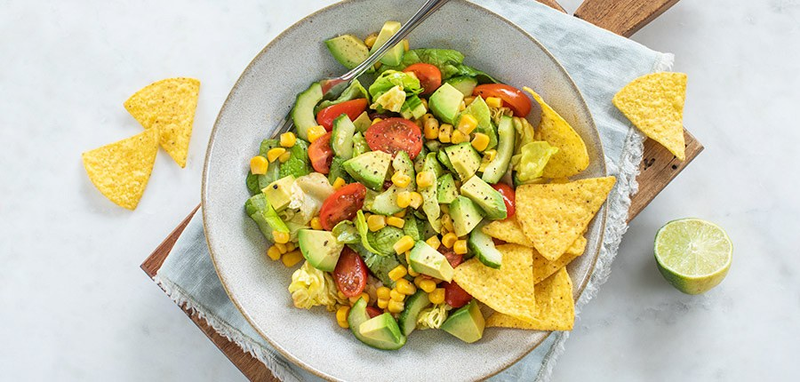

Mexicaanse salade

Ingredienten
- 75 g sla
- 140 g mais
- tortilla chips
- 250 g cherrytomaatjes
- 0,5 komkommer
- 1 avocado
Bereiding
- Halveer de cherrytomaatjes. Snijd de komkommer en de avocado. Verwijder schil en pit. snijd de vruchtvlees in stukjes en laat de mais uitlekken
- Pers de limoen uit, meng met de rest van de ingredienten. Meng de komkommer door de sla. Voeg de tomaatjes en mais toe.
- Voeg op het laatst de avocado en tortillachips toe. serveer direct